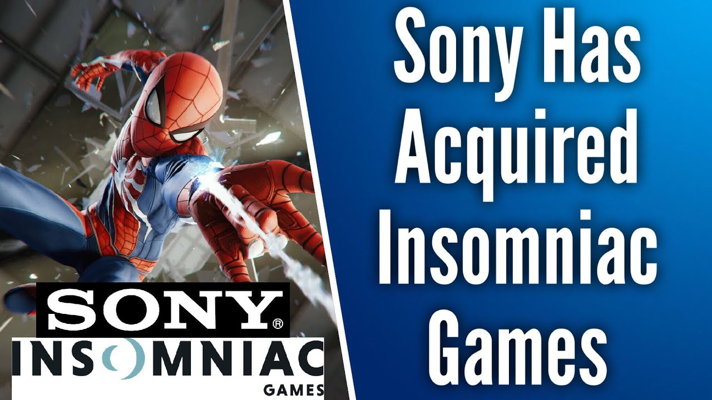

Another big developer joins the PlayStation family!
Sony has announced that it’ll be acquiring Insomniac Games, the game development studio behind the Ratchet & Clank series and, most recently, Marvel’s Spider-Man for the PS4.
The news isn’t totally surprising: Insomniac has long had a close relationship with Sony, developing PlayStation-exclusive titles like Spyro the Dragon, Resistance, so bringing Insomniac in-house as a first-party studio makes a lot of sense. With that being said, Insomniac has worked with other companies in recent years as well — with Sunset Overdrive (one of the Xbox One’s earliest console exclusives) with Microsoft, as well as Stormland, an open-world VR title for Oculus.
“Insomniac Games is one of the most highly-acclaimed development studios in the industry and their legacy of best-in class storytelling and gameplay is unparalleled,” commented Shawn Layden, the chairman of Sony Interactive Entertainment Worldwide Studios. “We have enjoyed a strong collaborative partnership with the studio for many years, and are thrilled to officially welcome them to the Worldwide Studios family. The addition of Insomniac Games to SIE WWS reiterates our commitment to developing world class gaming experiences that can only be found on the PlayStation platform.”
Insomniac has yet to announce its next major project, although with the massive success of Spider-Man last year, it’s possible another PlayStation-exclusive sequel to that title could be in the works, especially given the new Sony ownership.